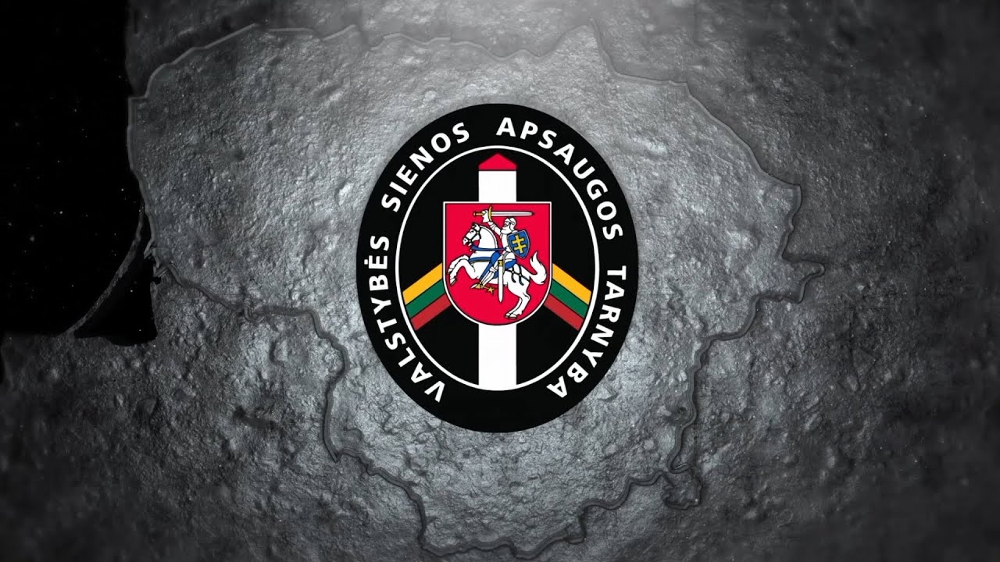

Welcome to valstybės
Popiežiaus valstybės sekretorius priėmė JAV valstybės sekretorių - Vatican News
2020.10.27 11:50Menu
Menu Popiežius Vatikanas Bažnyčia Pasaulis Pasirink kalbą Paieška English Italiano (Italian) Français (French) Deutsch (German) Español (Spanish) Português (Portuguese) العربية (Arabic) Հայերէն (Armenian) Беларуская (Belarusian) Български (Bulgarian) Čeština (Czech) Hrvatski (Croatian) Latviešu (Latvian) Lietuvių (Lithuanian) Magyar (Hungarian) Македонски (Macedonian) Polski (Polish) Română (Romanian) Shqip (Albanian) Slovenčina (Slovak) Slovenščina (Slovenian) Svenska (Swedish) Русский (Russian) Українська (Ukrainian) हिंदी (Hindi) മലയാളം (Malayalam) தமிழ் (Tamil) Tiếng việt (Vietnamese) 日本語 (Japanese) 한국어 (Korean) 繁體中文 (Traditional Chinese) 简体中文 (Simplified Chinese) English Africa Français Afrique Português África Kiswahili (Swahili) አማርኛ (Amharic) ትግርኛ (Tigrinya) Facebook Youtube Instagram RssPaieška
Paieška Nuo [Data] Iki [Data] Ieškok Visų žodžių Tikslios frazės Bent vieno Surūšiuok pagal Naujausią Seniausią PaieškaPaieška
lt lietuvių Pasirink kalbą Paieška English Italiano (Italian) Français (French) Deutsch (German) Español (Spanish) Português (Portuguese) العربية (Arabic) Հայերէն (Armenian) Беларуская (Belarusian) Български (Bulgarian) Čeština (Czech) Hrvatski (Croatian) Latviešu (Latvian) Lietuvių (Lithuanian) Magyar (Hungarian) Македонски (Macedonian) Polski (Polish) Română (Romanian) Shqip (Albanian) Slovenčina (Slovak) Slovenščina (Slovenian) Svenska (Swedish) Русский (Russian) Українська (Ukrainian) हिंदी (Hindi) മലയാളം (Malayalam) தமிழ் (Tamil) Tiếng việt (Vietnamese) 日本語 (Japanese) 한국어 (Korean) 繁體中文 (Traditional Chinese) 简体中文 (Simplified Chinese) English Africa Français Afrique Português África Kiswahili (Swahili) አማርኛ (Amharic) ትግርኛ (Tigrinya) Cookie Policy The portal Vatican News uses technical or similar cookies to make navigation easier and guarantee the use of the services. Furthermore, technical and analysis cookies from third parties may be used. If you want to know more click here . By closing this banner you consent to the use of cookies. I AGREE Vatikano radijas Laida lietuvių kalba (2020.10.26 19:20) Tinklelis Podcast 12:30 Laida lietuvių kalba Michael Pompeo ir kardinolas Pietro Parolin (ANSA) VATIKANASPopiežiaus valstybės sekretorius priėmė JAV valstybės sekretorių
Ketvirtadienį Vatikane lankėsi JAV valstybės sekretorius Michaelas Pompeo. Jį priėmė Popiežiaus valstybės sekretorius kardinolas Pietro Parolinas.JAV ir Vatikano diplomatijos vadovai trečiadienį dalyvavo Jungtinių Valstijų ambasados prie Šventojo Sosto surengtame simpoziume apie religijos laisvės ugdymą ir gynimą diplomatijos priemonėmis. Simpoziume dalyvavo JAV valstybės sekretorius Michaelas Pompeo, Vatikano valstybės sekretorius kardinolas Pietro Parolinas ir sekretorius santykiams su valstybėmis arkivyskupas Paulas Richardas Gallagheris.
JAV valstybės sekretorius savo kalboje paminėjo fundamentalų popiežiaus Jono Pauliaus II vaidmenį pagarbos žmogaus teisėms plėtrai pasaulyje. Šis popiežius, pasak JAV valstybės sekretoriaus, įžiebė sąžinės revoliuciją, kuri atnešė laisvę daugybei žmonių. Michaelas Pompeo kritikavo Kinijos poziciją religijos laisvės klausimu. Jos paisymas didele dalimi priklauso nuo krikščionių lyderių laikysenos ir nuo liudijimo tų žmonių, kurie kentėjo persekiojimus.
Arkivyskupas Paulas Richardas Gallagheris perdavė popiežiaus Pranciškaus sveikinimus simpoziumo dalyviams. Pasak arkivyskupo, religijos laisvės apsauga yra vienas iš pagrindinių Šventojo Sosto prioritetų. Šiais laikais religinė laisvė ne visada reiškia tiesioginį fizinį tikinčiųjų persekiojimą. Kai kurios šiuolaikinės ideologinės tendencijos ir siekimas nutildyti tikinčiuosius vardan „politinio korektiškumo“ irgi laikytinos religinės laisvės varžymu. Visiškai nepriimtinas ir įžeidus yra reikalavimas atsisakyti religijos laisvės arba nesivadovauti sąžine siekiant įtvirtinti kitus tikslus, pristatomus kaip žmogaus teisės. Šventasis Sostas visada yra pasirengęs kalbėtis su visais geravaliais pašnekovais, nes dialogas yra svarbiausia priemonė siekiant santarvės visuomenių viduje ir tarp tautų.
Vatikano valstybės sekretorius kardinolas Pietro Parolinas JAV ambasadoje vykusiame simpoziume sakytoje kalboje pabrėžė žmogaus teisių, tarp jų ir teisės nevaržomai išpažinti ir praktikuoti religiją, sąsajas su tiesa. Religijos laisvė neturi būti suprantama tik kaip suvaržymų ir apribojimų nebuvimas. Religijos laisvė turi būti suprantama ir pozityviąja prasme – kaip laisvė ieškoti tiesos, siekti savo gyvenimo galutinio tikslo ir prasmės.
Simpoziumo pabaigoje atsakydamas į žurnalistų klausimus apie skirtingas JAV ir Šventojo Sosto pozicijas dėl religinės laisvės Kinijoje, kardinolas patvirtino, kad Šventasis Sostas siekia pratęsti sutartį su Kiniją dėl vyskupų skyrimo, nes tiki, kad tai mažas, bet svarbus žingsnis link platesnės religinės laisvės. Kardinolas taip pat sakė, kad Šventojo Sosto ir Kinijos susitarimo klausimas neturėtų būtų naudojamas vidiniams JAV rinkimų tikslams. (JM / Vatican News )
Paremk svarbią misiją: prisidėk, kad popiežiaus žodis pasiektų kiekvienus namus 2020 spalio 01, 12:36 Siųsk SpausdinkKiti numatomi įvykiai:
Radijas Tinklelis CH Mišios Šv. Mortos namuose Viešpaties Angelas Popiežiaus audiencijos Paremk svarbią misijąPopiežiaus veikla
Viešpaties Angelas Regina Coeli Mišios Mortos namuose Popiežiaus audiencijanaudinga informacija
Apie mus Kontaktai Dažnai užduodami klausimai Teisinė informacija Privacy Policy Cookie Policykiti puslapiai
Vatican.va Vaticanstate.va Peter's Pence Photovat.comKita
Tinklelis Podcast Short Waves Download Facebook Youtube Instagram Rss Copyright © 2017-2020 Dicasterium pro Communicatione - Visos teisės saugomos.